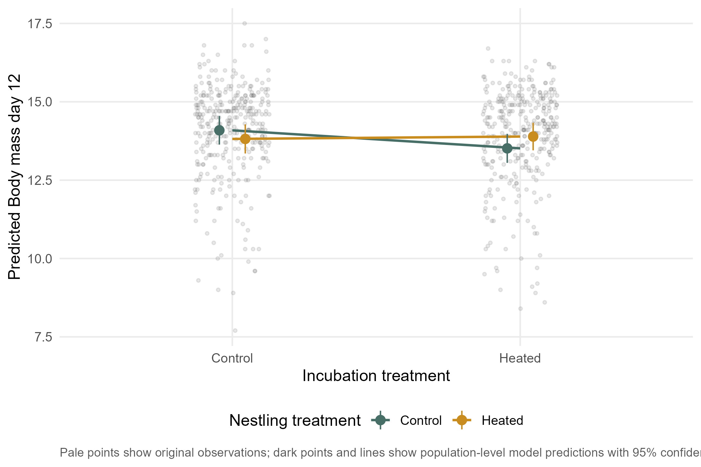
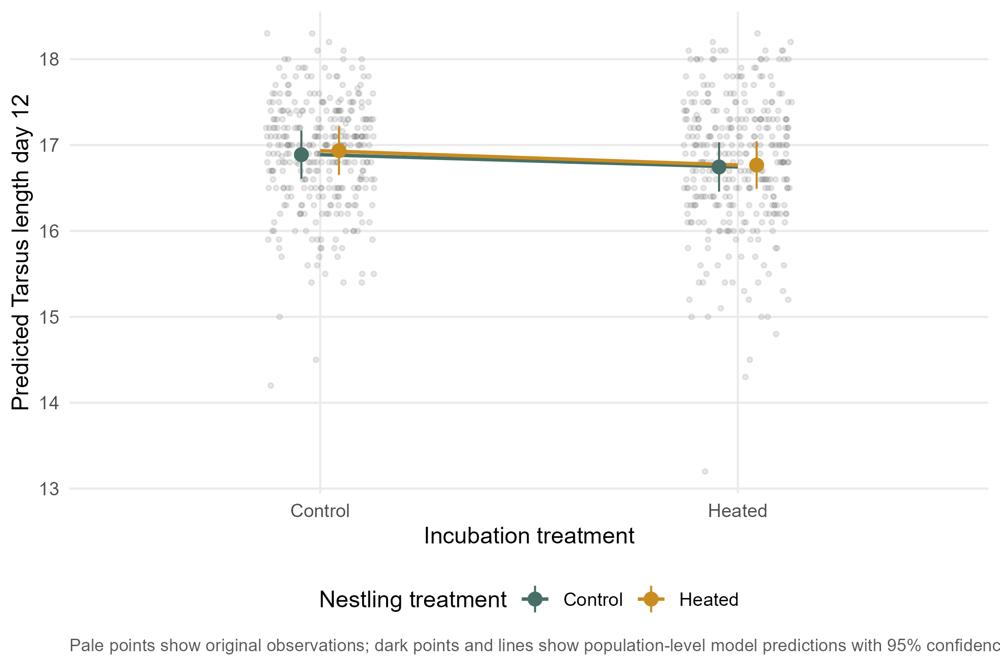
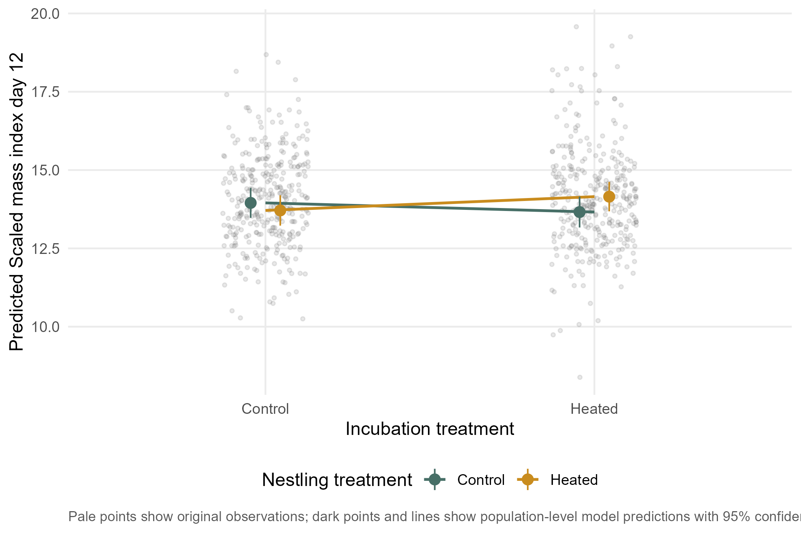
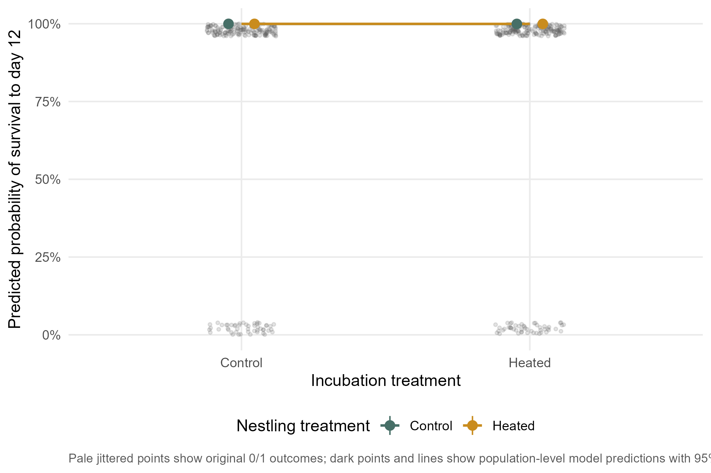
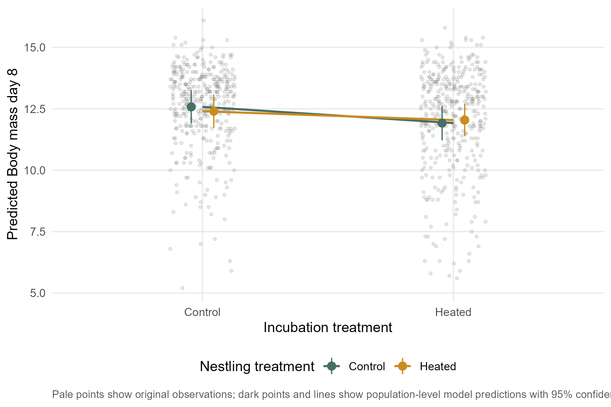
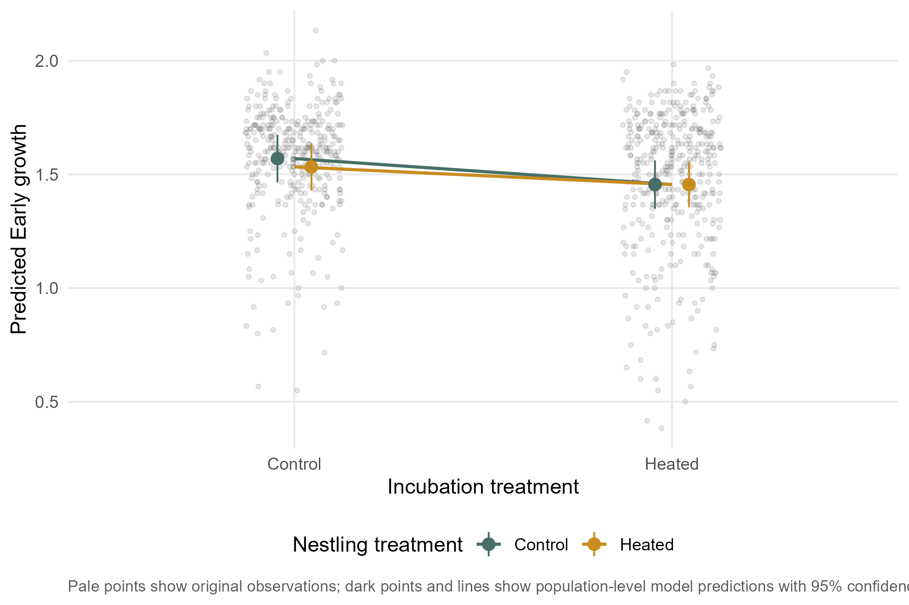
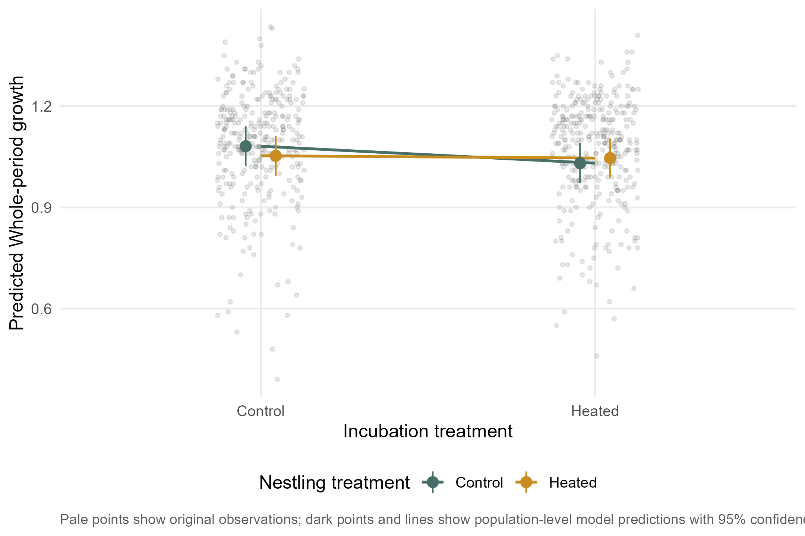
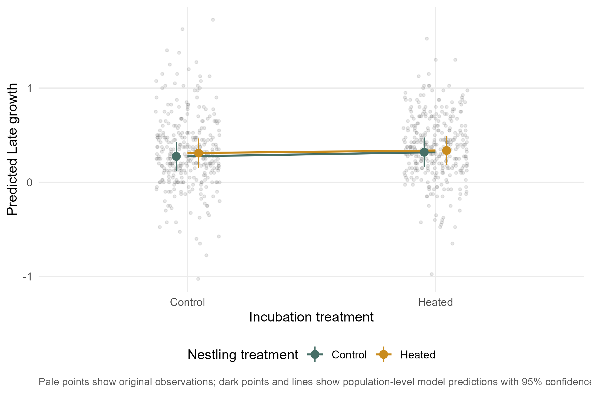

response ~ EXP.INC * EXP.NEST + SEX + BS_sc + (1|F_RING) + (1|YEAR)Experimental interaction models
This page tests whether the effect of nestling-stage warming depends on incubation-stage warming. Biologically, this asks whether conditions experienced before hatching modify later responses to the nestling-period treatment.
The interaction model is:
Day-2 mass is not included here because it occurs before most of the nestling-stage treatment.
Interaction terms
| Response | Interaction term | Estimate | SE | z | p |
|---|---|---|---|---|---|
| Day-8 body mass | EXP.INCHeated:EXP.NESTHeated | 0.301 | 0.493 | 0.609 | 0.5425 |
| Day-12 body mass | EXP.INCHeated:EXP.NESTHeated | 0.651 | 0.457 | 1.426 | 0.1538 |
| Early growth | EXP.INCHeated:EXP.NESTHeated | 0.037 | 0.078 | 0.468 | 0.6396 |
| Late growth | EXP.INCHeated:EXP.NESTHeated | -0.016 | 0.096 | -0.169 | 0.8661 |
| Whole-period growth | EXP.INCHeated:EXP.NESTHeated | 0.044 | 0.050 | 0.873 | 0.3825 |
| Day-12 scaled mass index | EXP.INCHeated:EXP.NESTHeated | 0.733 | 0.419 | 1.749 | 0.0803 |
| Day-12 tarsus length | EXP.INCHeated:EXP.NESTHeated | -0.024 | 0.188 | -0.128 | 0.8980 |
| Day-12 survival | EXP.INCHeated:EXP.NESTHeated | 0.297 | 1.860 | 0.160 | 0.8732 |
Prediction figures
D12_MASS
Predicted values are the main model signal. Pale points show the original observations in the background, and vertical intervals show 95% confidence intervals around population-level predictions.

D12_RTARS
Predicted values are the main model signal. Pale points show the original observations in the background, and vertical intervals show 95% confidence intervals around population-level predictions.

D12_SMI
Predicted values are the main model signal. Pale points show the original observations in the background, and vertical intervals show 95% confidence intervals around population-level predictions.

D12_SURV
Predicted values are the main model signal. Pale points show the original observations in the background, and vertical intervals show 95% confidence intervals around population-level predictions.

D8_MASS
Predicted values are the main model signal. Pale points show the original observations in the background, and vertical intervals show 95% confidence intervals around population-level predictions.

Early.g
Predicted values are the main model signal. Pale points show the original observations in the background, and vertical intervals show 95% confidence intervals around population-level predictions.

Growth
Predicted values are the main model signal. Pale points show the original observations in the background, and vertical intervals show 95% confidence intervals around population-level predictions.

Late.g
Predicted values are the main model signal. Pale points show the original observations in the background, and vertical intervals show 95% confidence intervals around population-level predictions.

Saved model summaries
summary_D12_MASS_interaction_gaussian
Show saved model summary
Family: gaussian ( identity )
Formula: D12_MASS ~ EXP.INC * EXP.NEST + SEX + BS_sc + (1 | F_RING) +
(1 | YEAR)
Data: model_data
AIC BIC logLik -2*log(L) df.resid
2091.5 2132.3 -1036.7 2073.5 678
Random effects:
Conditional model:
Groups Name Variance Std.Dev.
F_RING (Intercept) 1.690e+00 1.2998287
YEAR (Intercept) 3.020e-08 0.0001738
Residual 7.181e-01 0.8473968
Number of obs: 687, groups: F_RING, 144; YEAR, 4
Dispersion estimate for gaussian family (sigma^2): 0.718
Conditional model:
Estimate Std. Error z value Pr(>|z|)
(Intercept) 14.08844 0.23185 60.76 <2e-16 ***
EXP.INCHeated -0.57559 0.32465 -1.77 0.0762 .
EXP.NESTHeated -0.27468 0.32435 -0.85 0.3971
SEXM 0.14448 0.07300 1.98 0.0478 *
BS_sc 0.05341 0.10053 0.53 0.5952
EXP.INCHeated:EXP.NESTHeated 0.65140 0.45675 1.43 0.1538
---
Signif. codes: 0 '***' 0.001 '**' 0.01 '*' 0.05 '.' 0.1 ' ' 1summary_D12_RTARS_interaction_gaussian
Show saved model summary
Family: gaussian ( identity )
Formula:
D12_RTARS ~ EXP.INC * EXP.NEST + SEX + BS_sc + (1 | F_RING) + (1 | YEAR)
Data: model_data
AIC BIC logLik -2*log(L) df.resid
1092.3 1133.0 -537.2 1074.3 671
Random effects:
Conditional model:
Groups Name Variance Std.Dev.
F_RING (Intercept) 0.26532 0.5151
YEAR (Intercept) 0.04489 0.2119
Residual 0.18516 0.4303
Number of obs: 680, groups: F_RING, 141; YEAR, 4
Dispersion estimate for gaussian family (sigma^2): 0.185
Conditional model:
Estimate Std. Error z value Pr(>|z|)
(Intercept) 16.88676 0.14313 117.98 <2e-16 ***
EXP.INCHeated -0.14287 0.13392 -1.07 0.286
EXP.NESTHeated 0.04621 0.13346 0.35 0.729
SEXM -0.04766 0.03691 -1.29 0.197
BS_sc 0.05775 0.04652 1.24 0.214
EXP.INCHeated:EXP.NESTHeated -0.02414 0.18821 -0.13 0.898
---
Signif. codes: 0 '***' 0.001 '**' 0.01 '*' 0.05 '.' 0.1 ' ' 1summary_D12_SMI_interaction_gaussian
Show saved model summary
Family: gaussian ( identity )
Formula:
D12_SMI ~ EXP.INC * EXP.NEST + SEX + BS_sc + (1 | F_RING) + (1 | YEAR)
Data: model_data
AIC BIC logLik -2*log(L) df.resid
2240.3 2281.0 -1111.1 2222.3 670
Random effects:
Conditional model:
Groups Name Variance Std.Dev.
F_RING (Intercept) 1.28784 1.1348
YEAR (Intercept) 0.05374 0.2318
Residual 1.03814 1.0189
Number of obs: 679, groups: F_RING, 141; YEAR, 4
Dispersion estimate for gaussian family (sigma^2): 1.04
Conditional model:
Estimate Std. Error z value Pr(>|z|)
(Intercept) 13.95710 0.24320 57.39 < 2e-16 ***
EXP.INCHeated -0.29207 0.29779 -0.98 0.32670
EXP.NESTHeated -0.24118 0.29675 -0.81 0.41637
SEXM 0.27276 0.08743 3.12 0.00181 **
BS_sc -0.19473 0.10028 -1.94 0.05214 .
EXP.INCHeated:EXP.NESTHeated 0.73258 0.41891 1.75 0.08033 .
---
Signif. codes: 0 '***' 0.001 '**' 0.01 '*' 0.05 '.' 0.1 ' ' 1summary_D12_SURV_interaction_binomial
Show saved model summary
Family: binomial ( logit )
Formula:
D12_SURV_bin ~ EXP.INC * EXP.NEST + SEX + BS_sc + (1 | F_RING) +
(1 | YEAR)
Data: surv_dat
AIC BIC logLik -2*log(L) df.resid
568.5 606.8 -276.3 552.5 875
Random effects:
Conditional model:
Groups Name Variance Std.Dev.
F_RING (Intercept) 9.379e+01 9.6843706
YEAR (Intercept) 2.088e-08 0.0001445
Number of obs: 883, groups: F_RING, 169; YEAR, 4
Conditional model:
Estimate Std. Error z value Pr(>|z|)
(Intercept) 7.8032 1.1714 6.661 2.72e-11 ***
EXP.INCHeated -0.3563 1.3601 -0.262 0.793
EXP.NESTHeated -0.1031 1.2978 -0.079 0.937
SEXM 0.2323 0.3352 0.693 0.488
BS_sc 0.2006 0.3933 0.510 0.610
EXP.INCHeated:EXP.NESTHeated 0.2968 1.8605 0.160 0.873
---
Signif. codes: 0 '***' 0.001 '**' 0.01 '*' 0.05 '.' 0.1 ' ' 1summary_D8_MASS_interaction_gaussian
Show saved model summary
Family: gaussian ( identity )
Formula:
D8_MASS ~ EXP.INC * EXP.NEST + SEX + BS_sc + (1 | F_RING) + (1 | YEAR)
Data: model_data
AIC BIC logLik -2*log(L) df.resid
2692.1 2734.0 -1337.1 2674.1 766
Random effects:
Conditional model:
Groups Name Variance Std.Dev.
F_RING (Intercept) 2.0477 1.4310
YEAR (Intercept) 0.2226 0.4718
Residual 1.1760 1.0844
Number of obs: 775, groups: F_RING, 153; YEAR, 4
Dispersion estimate for gaussian family (sigma^2): 1.18
Conditional model:
Estimate Std. Error z value Pr(>|z|)
(Intercept) 12.58438 0.34630 36.34 <2e-16 ***
EXP.INCHeated -0.65985 0.35738 -1.85 0.0648 .
EXP.NESTHeated -0.17708 0.34879 -0.51 0.6117
SEXM 0.10122 0.08620 1.17 0.2403
BS_sc -0.09311 0.12161 -0.77 0.4439
EXP.INCHeated:EXP.NESTHeated 0.30054 0.49344 0.61 0.5425
---
Signif. codes: 0 '***' 0.001 '**' 0.01 '*' 0.05 '.' 0.1 ' ' 1summary_Early.g_interaction_gaussian
Show saved model summary
Family: gaussian ( identity )
Formula:
Early.g ~ EXP.INC * EXP.NEST + SEX + BS_sc + (1 | F_RING) + (1 | YEAR)
Data: model_data
AIC BIC logLik -2*log(L) df.resid
-527.2 -485.6 272.6 -545.2 748
Random effects:
Conditional model:
Groups Name Variance Std.Dev.
F_RING (Intercept) 0.05305 0.23032
YEAR (Intercept) 0.00475 0.06892
Residual 0.01620 0.12728
Number of obs: 757, groups: F_RING, 150; YEAR, 4
Dispersion estimate for gaussian family (sigma^2): 0.0162
Conditional model:
Estimate Std. Error z value Pr(>|z|)
(Intercept) 1.57059 0.05318 29.532 < 2e-16 ***
EXP.INCHeated -0.11435 0.05685 -2.012 0.04426 *
EXP.NESTHeated -0.03658 0.05590 -0.654 0.51279
SEXM 0.03148 0.01030 3.057 0.00224 **
BS_sc -0.02084 0.01887 -1.104 0.26952
EXP.INCHeated:EXP.NESTHeated 0.03664 0.07826 0.468 0.63964
---
Signif. codes: 0 '***' 0.001 '**' 0.01 '*' 0.05 '.' 0.1 ' ' 1summary_Growth_interaction_gaussian
Show saved model summary
Family: gaussian ( identity )
Formula:
Growth ~ EXP.INC * EXP.NEST + SEX + BS_sc + (1 | F_RING) + (1 | YEAR)
Data: model_data
AIC BIC logLik -2*log(L) df.resid
-1012.7 -972.3 515.4 -1030.7 655
Random effects:
Conditional model:
Groups Name Variance Std.Dev.
F_RING (Intercept) 0.0196750 0.14027
YEAR (Intercept) 0.0009608 0.03100
Residual 0.0071717 0.08469
Number of obs: 664, groups: F_RING, 140; YEAR, 4
Dispersion estimate for gaussian family (sigma^2): 0.00717
Conditional model:
Estimate Std. Error z value Pr(>|z|)
(Intercept) 1.081470 0.030120 35.90 <2e-16 ***
EXP.INCHeated -0.050304 0.035476 -1.42 0.1562
EXP.NESTHeated -0.028369 0.035836 -0.79 0.4286
SEXM 0.018804 0.007441 2.53 0.0115 *
BS_sc -0.004697 0.011614 -0.40 0.6859
EXP.INCHeated:EXP.NESTHeated 0.043553 0.049869 0.87 0.3825
---
Signif. codes: 0 '***' 0.001 '**' 0.01 '*' 0.05 '.' 0.1 ' ' 1summary_Late.g_interaction_gaussian
Show saved model summary
Family: gaussian ( identity )
Formula:
Late.g ~ EXP.INC * EXP.NEST + SEX + BS_sc + (1 | F_RING) + (1 | YEAR)
Data: model_data
AIC BIC logLik -2*log(L) df.resid
120.7 161.3 -51.3 102.7 668
Random effects:
Conditional model:
Groups Name Variance Std.Dev.
F_RING (Intercept) 0.07057 0.2656
YEAR (Intercept) 0.01493 0.1222
Residual 0.04328 0.2080
Number of obs: 677, groups: F_RING, 141; YEAR, 4
Dispersion estimate for gaussian family (sigma^2): 0.0433
Conditional model:
Estimate Std. Error z value Pr(>|z|)
(Intercept) 0.275898 0.078456 3.517 0.000437 ***
EXP.INCHeated 0.043608 0.068502 0.637 0.524386
EXP.NESTHeated 0.034671 0.068341 0.507 0.611926
SEXM 0.013189 0.017917 0.736 0.461654
BS_sc -0.006464 0.023522 -0.275 0.783478
EXP.INCHeated:EXP.NESTHeated -0.016249 0.096337 -0.169 0.866055
---
Signif. codes: 0 '***' 0.001 '**' 0.01 '*' 0.05 '.' 0.1 ' ' 1